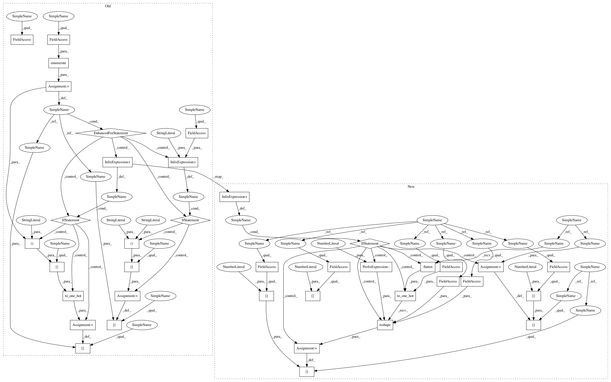

490b5acedeb65d17c9d6fd965f28e8146e673656,deepchem/models/tensorgraph/models/graph_models.py,WeaveModel,default_generator,#WeaveModel#Any#Any#Any#Any#Any#,151
Before Change
feed_dict = dict()
if y_b is not None:
for index, label in enumerate(self.labels_fd):
if self.mode == "classification":
feed_dict[label] = to_one_hot(y_b[:, index])
if self.mode == "regression":
feed_dict[label] = y_b[:, index:index + 1]
if w_b is not None:
feed_dict[self.weights] = w_b
atom_feat = []
pair_feat = []
After Change
weighted_loss = ReduceSum(L2Loss(in_layers=[labels, output, weights]))
self.set_loss(weighted_loss)
def default_generator(self,
dataset,
epochs=1,
predict=False,
deterministic=True,
pad_batches=True):
TensorGraph style implementation
for epoch in range(epochs):
if not predict:
print("Starting epoch %i" % epoch)
for (X_b, y_b, w_b, ids_b) in dataset.iterbatches(
batch_size=self.batch_size,
deterministic=deterministic,
pad_batches=pad_batches):
feed_dict = dict()
if y_b is not None:
if self.mode == "classification":
feed_dict[self.labels[0]] = to_one_hot(y_b.flatten(),
self.n_classes).reshape(
-1, self.n_tasks,
self.n_classes)
else:
feed_dict[self.labels[0]] = y_b
if w_b is not None:
feed_dict[self.task_weights[0]] = w_b
atom_feat = []
pair_feat = []
In pattern: SUPERPATTERN
Frequency: 3
Non-data size: 38
Instances
Project Name: deepchem/deepchem
Commit Name: 490b5acedeb65d17c9d6fd965f28e8146e673656
Time: 2018-04-23
Author: peastman@stanford.edu
File Name: deepchem/models/tensorgraph/models/graph_models.py
Class Name: WeaveModel
Method Name: default_generator
Project Name: deepchem/deepchem
Commit Name: a453eb76dddb37e087c12d4173033372bc56f9c3
Time: 2018-04-19
Author: peastman@stanford.edu
File Name: deepchem/models/tensorgraph/models/graph_models.py
Class Name: DAGModel
Method Name: default_generator
Project Name: deepchem/deepchem
Commit Name: 490b5acedeb65d17c9d6fd965f28e8146e673656
Time: 2018-04-23
Author: peastman@stanford.edu
File Name: deepchem/models/tensorgraph/models/graph_models.py
Class Name: WeaveModel
Method Name: default_generator
Project Name: deepchem/deepchem
Commit Name: 490b5acedeb65d17c9d6fd965f28e8146e673656
Time: 2018-04-23
Author: peastman@stanford.edu
File Name: deepchem/models/tensorgraph/models/graph_models.py
Class Name: MPNNModel
Method Name: default_generator